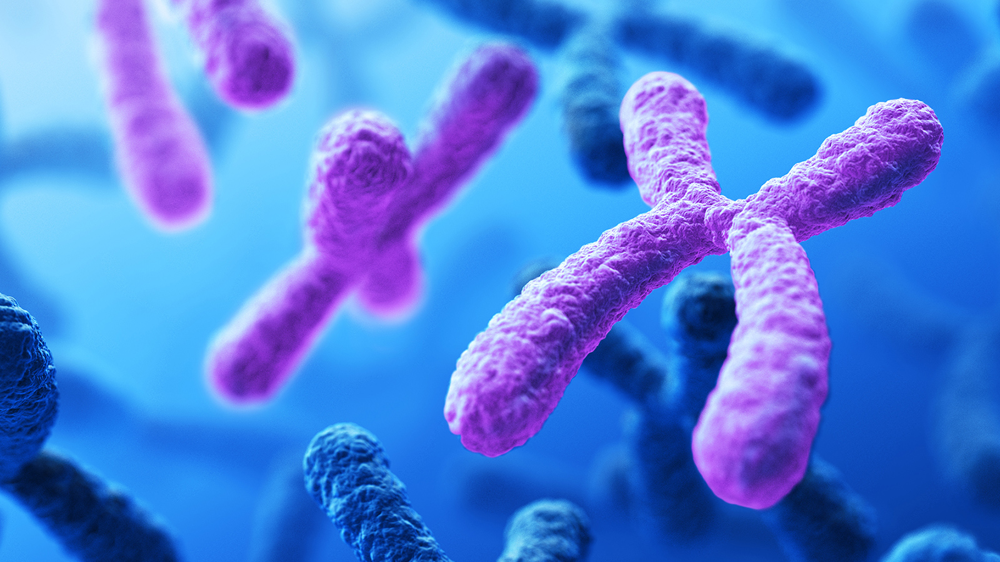
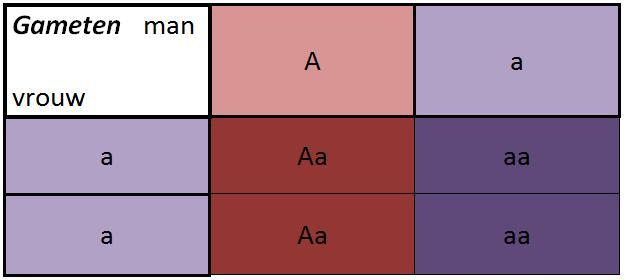
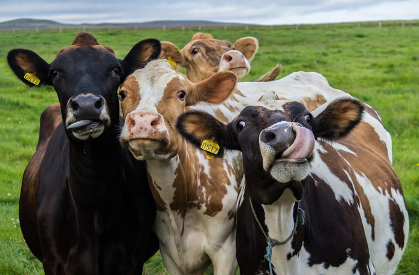

Dihybride kruising
Een dihybride kruising is een kruising waarbij wordt gelet op de overerving van twee eigenschappen.
Kansen berekenen
Met een kruisingsschema kun je de verhouding van fenotypen bij nakomelingen bepalen. Als je de kans op een bepaald genotype of fenotypen wilt bepalen, moet je de kansen per eigenschap bepalen en de kansen met elkaar vermenigvuldigen.

